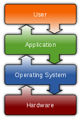

Operating system
| This article needs additional citations for verification. Please help improve this article by adding citations to reliable sources. Unsourced material may be challenged and removed. (October 2011) |
| Operating systems |
|---|
|

 |
| Common features |
An operating system (OS) is a set of programs that manage computer hardware resources and provide common services for application software. The operating system is a vital component of the system software in a computer system. Application programs require an operating system which are usually separate programs, but can be combined in simple systems.
Time-sharing operating systems schedule tasks for efficient use of the system and may also include accounting for cost allocation of processor time, mass storage, printing, and other resources.
For hardware functions such as input and output and memory allocation, the operating system acts as an intermediary between application programs and the computer hardware,[1][2] although the application code is usually executed directly by the hardware and will frequently make a system call to an OS function or be interrupted by it. Operating systems are found on almost any device that contains a computer—from cellular phones and video game consoles to supercomputers and web servers.
Examples of popular modern operating systems include Android, BSD, iOS, Linux, Mac OS X, Microsoft Windows,[3] Windows Phone, and Z/OS. All these, except Windows and Z/OS, share roots in Unix.
Contents[hide] |
[edit] Types
| This unreferenced section requires citations to ensure verifiability. |
{kind=link}
- Real-time
- A real-time operating system is a multitasking operating system that aims at executing real-time applications. Real-time operating systems often use specialized scheduling algorithms so that they can achieve a deterministic nature of behavior. The main objective of real-time operating systems is their quick and predictable response to events. They have an event-driven or time-sharing design and often aspects of both. An event-driven system switches between tasks based on their priorities or external events while time-sharing operating systems switch tasks based on clock interrupts.
- Multi-user
- A multi-user operating system allows multiple users to access a computer system concurrently. Time-sharing system can be classified as multi-user systems as they enable a multiple user access to a computer through the sharing of time. Single-user operating systems, as opposed to a multi-user operating system, are usable by a single user at a time. Being able to use multiple accounts on a Windows operating system does not make it a multi-user system. Rather, only the network administrator is the real user. But for a Unix-like operating system, it is possible for two users to login at a time and this capability of the OS makes it a multi-user operating system.
- Multi-tasking vs. Single-tasking
- When only a single program is allowed to run at a time, the system is grouped under a single-tasking system. However, when the operating system allows the execution of multiple tasks at one time, it is classified as a multi-tasking operating system. Multi-tasking can be of two types: pre-emptive or co-operative. In pre-emptive multitasking, the operating system slices the CPU time and dedicates one slot to each of the programs. Unix-like operating systems such as Solaris and Linux support pre-emptive multitasking, as does AmigaOS. Cooperative multitasking is achieved by relying on each process to give time to the other processes in a defined manner. 16-bit versions of Microsoft Windows used cooperative multi-tasking. 32-bit versions, both Windows NT and Win9x, used pre-emptive multi-tasking. Mac OS prior to OS X used to support cooperative multitasking.
- Distributed
- A distributed operating system manages a group of independent computers and makes them appear to be a single computer. The development of networked computers that could be linked and communicate with each other gave rise to distributed computing. Distributed computations are carried out on more than one machine. When computers in a group work in cooperation, they make a distributed system.
- Embedded
- Embedded operating systems are designed to be used in embedded computer systems. They are designed to operate on small machines like PDAs with less autonomy. They are able to operate with a limited number of resources. They are very compact and extremely efficient by design. Windows CE and Minix 3 are some examples of embedded operating systems.
[edit] Summary
Early computers were built to perform a series of single tasks, like a calculator. Operating systems did not exist in their modern and more complex forms until the early 1960s.[4] Some operating system features were developed in the 1950s, such as resident monitor programs that could automatically run different application programs in succession to speed up processing. Hardware features were added that enabled use of runtime libraries, interrupts, and parallel processing. When personal computers by companies such as Apple Inc., Atari, IBM and Amiga became popular in the 1980s, vendors added operating system features that had previously become widely used on mainframe and mini computers. Later, many features such as graphical user interface were developed specifically for personal computer operating systems.
An operating system consists of many parts. One of the most important components is the kernel, which controls low-level processes that the average user usually cannot see: it controls how memory is read and written, the order in which processes are executed, how information is received and sent by devices like the monitor, keyboard and mouse, and decides how to interpret information received from networks. The user interface is a component that interacts with the computer user directly, allowing them to control and use programs. The user interface may be graphical with icons and a desktop, or textual, with a command line. Application programming interfaces provide services and code libraries that let applications developers write modular code reusing well defined programming sequences in user space libraries or in the operating system itself. Which features are considered part of the operating system is defined differently in various operating systems. For example, Microsoft Windows considers its user interface to be part of the operating system, while many versions of Linux do not.
[edit] History
In the 1940s, the earliest electronic digital systems had no operating systems. Electronic systems of this time were so primitive compared to those of today that instructions were often entered into the system one bit at a time on rows of mechanical switches or by jumper wires on plug boards. These were special-purpose systems that, for example, generated ballistics tables for the military or controlled the printing of payroll checks from data on punched paper cards. After programmable general purpose computers were invented, machine languages (consisting of strings of the binary digits 0 and 1 on punched paper tape) were introduced that sped up the programming process (Stern, 1981).
{kind=link}
In the early 1950s, a computer could execute only one program at a time. Each user had sole use of the computer for a limited period of time and would arrive at a scheduled time with program and data on punched paper cards and/or punched tape. The program would be loaded into the machine, and the machine would be set to work until the program completed or crashed. Programs could generally be debugged via a front panel using toggle switches and panel lights. It is said that Alan Turing was a master of this on the early Manchester Mark 1 machine, and he was already deriving the primitive conception of an operating system from the principles of the Universal Turing machine.[citation needed]
Later machines came with libraries of software, which would be linked to a user's program to assist in operations such as input and output and generating computer code from human-readable symbolic code. This was the genesis of the modern-day operating system. However, machines still ran a single job at a time. At Cambridge University in England the job queue was at one time a washing line from which tapes were hung with different colored clothes-pegs to indicate job-priority.[citation needed]
[edit] Mainframes
Through the 1950s, many major features were pioneered in the field of operating systems, including batch processing, input/output interrupt, buffering, multitasking, spooling, runtime libraries, link-loading, and programs for sorting records in files. These features were included or not included in application software at the option of application programmers, rather than in a separate operating system used by all applications. In 1959 the SHARE Operating System was released as an integrated utility for the IBM 704, and later in the 709 and 7090 mainframes, although it was quickly supplanted by IBSYS/IBJOB on the 709, 7090 and 7094.
During the 1960s, IBM's OS/360 introduced the concept of a single OS spanning an entire product line, which was crucial for the success of the System/360 machines. IBM's current mainframe operating systems are distant descendants of this original system and applications written for OS/360 can still be run on modern machines.[citation needed]
OS/360 also pioneered the concept that the operating system keeps track of all of the system resources that are used, including program and data space allocation in main memory and file space in secondary storage, and file locking during update. When the process is terminated for any reason, all of these resources are re-claimed by the operating system.
The alternative CP-67 system for the S/360-67 started a whole line of IBM operating systems focused on the concept of virtual machines. Other operating systems used on IBM S/360 series mainframes included systems developed by IBM: COS/360 (Compatibility Operating System), DOS/360 (Disk Operating System), TSS/360 (Time Sharing System), TOS/360 (Tape Operating System), BOS/360 (Basic Operating System), and ACP (Airline Control Program), as well as a few non-IBM systems: MTS (Michigan Terminal System), MUSIC (Multi-User System for Interactive Computing), and ORVYL (Stanford Timesharing System).
Control Data Corporation developed the SCOPE operating system in the 1960s, for batch processing. In cooperation with the University of Minnesota, the Kronos and later the NOS operating systems were developed during the 1970s, which supported simultaneous batch and timesharing use. Like many commercial timesharing systems, its interface was an extension of the Dartmouth BASIC operating systems, one of the pioneering efforts in timesharing and programming languages. In the late 1970s, Control Data and the University of Illinois developed the PLATO operating system, which used plasma panel displays and long-distance time sharing networks. Plato was remarkably innovative for its time, featuring real-time chat, and multi-user graphical games. Burroughs Corporation introduced the B5000 in 1961 with the MCP, (Master Control Program) operating system. The B5000 was a stack machine designed to exclusively support high-level languages with no machine language or assembler, and indeed the MCP was the first OS to be written exclusively in a high-level language – ESPOL, a dialect of ALGOL. MCP also introduced many other ground-breaking innovations, such as being the first commercial implementation of virtual memory. During development of the AS400, IBM made an approach to Burroughs to licence MCP to run on the AS400 hardware. This proposal was declined by Burroughs management to protect its existing hardware production. MCP is still in use today in the Unisys ClearPath/MCP line of computers.
UNIVAC, the first commercial computer manufacturer, produced a series of EXEC operating systems. Like all early main-frame systems, this was a batch-oriented system that managed magnetic drums, disks, card readers and line printers. In the 1970s, UNIVAC produced the Real-Time Basic (RTB) system to support large-scale time sharing, also patterned after the Dartmouth BC system.
General Electric and MIT developed General Electric Comprehensive Operating Supervisor (GECOS), which introduced the concept of ringed security privilege levels. After acquisition by Honeywell it was renamed to General Comprehensive Operating System (GCOS).
Digital Equipment Corporation developed many operating systems for its various computer lines, including TOPS-10 and TOPS-20 time sharing systems for the 36-bit PDP-10 class systems. Prior to the widespread use of UNIX, TOPS-10 was a particularly popular system in universities, and in the early ARPANET community.
In the late 1960s through the late 1970s, several hardware capabilities evolved that allowed similar or ported software to run on more than one system. Early systems had utilized microprogramming to implement features on their systems in order to permit different underlying computer architectures to appear to be the same as others in a series. In fact most 360s after the 360/40 (except the 360/165 and 360/168) were microprogrammed implementations. But soon other means of achieving application compatibility were proven to be more significant.
The enormous investment in software for these systems made since 1960s caused most of the original computer manufacturers to continue to develop compatible operating systems along with the hardware. The notable supported mainframe operating systems include:
- Burroughs MCP – B5000, 1961 to Unisys Clearpath/MCP, present.
- IBM OS/360 – IBM System/360, 1966 to IBM z/OS, present.
- IBM CP-67 – IBM System/360, 1967 to IBM z/VM, present.
- UNIVAC EXEC 8 – UNIVAC 1108, 1967, to OS 2200 Unisys Clearpath Dorado, present.
[edit] Microcomputers
{kind=link}
{kind=link}
The first microcomputers did not have the capacity or need for the elaborate operating systems that had been developed for mainframes and minis; minimalistic operating systems were developed, often loaded from ROM and known as monitors. One notable early disk operating system was CP/M, which was supported on many early microcomputers and was closely imitated by Microsoft's MS-DOS, which became wildly popular as the operating system chosen for the IBM PC (IBM's version of it was called IBM DOS or PC DOS). In the '80s, Apple Computer Inc. (now Apple Inc.) abandoned its popular Apple II series of microcomputers to introduce the Apple Macintosh computer with an innovative Graphical User Interface (GUI) to the Mac OS.
The introduction of the Intel 80386 CPU chip with 32-bit architecture and paging capabilities, provided personal computers with the ability to run multitasking operating systems like those of earlier minicomputers and mainframes. Microsoft responded to this progress by hiring Dave Cutler, who had developed the VMS operating system for Digital Equipment Corporation. He would lead the development of the Windows NT operating system, which continues to serve as the basis for Microsoft's operating systems line. Steve Jobs, a co-founder of Apple Inc., started NeXT Computer Inc., which developed the Unix-like NEXTSTEP operating system. NEXTSTEP would later be acquired by Apple Inc. and used, along with code from FreeBSD as the core of Mac OS X.
The GNU Project was started by activist and programmer Richard Stallman with the goal of a complete free software replacement to the proprietary UNIX operating system. While the project was highly successful in duplicating the functionality of various parts of UNIX, development of the GNU Hurd kernel proved to be unproductive. In 1991, Finnish computer science student Linus Torvalds, with cooperation from volunteers collaborating over the Internet, released the first version of the Linux kernel. It was soon merged with the GNU user space components and system software to form a complete operating system. Since then, the combination of the two major components has usually been referred to as simply "Linux" by the software industry, a naming convention that Stallman and the Free Software Foundation remain opposed to, preferring the name GNU/Linux. The Berkeley Software Distribution, known as BSD, is the UNIX derivative distributed by the University of California, Berkeley, starting in the 1970s. Freely distributed and ported to many minicomputers, it eventually also gained a following for use on PCs, mainly as FreeBSD, NetBSD and OpenBSD.
[edit] Examples of operating systems
[edit] Unix and Unix-like operating systems
{kind=link}
Ken Thompson wrote B, mainly based on BCPL, which he used to write Unix, based on his experience in the MULTICS project. B was replaced by C, and Unix developed into a large, complex family of inter-related operating systems which have been influential in every modern operating system (see History).
The Unix-like family is a diverse group of operating systems, with several major sub-categories including System V, BSD, and GNU/Linux. The name "UNIX" is a trademark of The Open Group which licenses it for use with any operating system that has been shown to conform to their definitions. "Unix-like" is commonly used to refer to the large set of operating systems which resemble the original Unix.
Unix-like systems run on a wide variety of computer architectures. They are used heavily for servers in business, as well as workstations in academic and engineering environments. Free Unix variants, such as GNU/Linux and BSD, are popular in these areas.
Four operating systems are certified by the The Open Group (holder of the Unix trademark) as Unix. HP's HP-UX and IBM's AIX are both descendants of the original System V Unix and are designed to run only on their respective vendor's hardware. In contrast, Sun Microsystems's Solaris Operating System can run on multiple types of hardware, including x86 and Sparc servers, and PCs. Apple's Mac OS X, a replacement for Apple's earlier (non-Unix) Mac OS, is a hybrid kernel-based BSD variant derived from NeXTSTEP, Mach, and FreeBSD.
Unix interoperability was sought by establishing the POSIX standard. The POSIX standard can be applied to any operating system, although it was originally created for various Unix variants.
[edit] BSD and its descendants
{kind=link}
A subgroup of the Unix family is the Berkeley Software Distribution family, which includes FreeBSD, NetBSD, and OpenBSD, PC-BSD. These operating systems are most commonly found on webservers, although they can also function as a personal computer OS. The Internet owes much of its existence to BSD, as many of the protocols now commonly used by computers to connect, send and receive data over a network were widely implemented and refined in BSD. The world wide web was also first demonstrated on a number of computers running an OS based on BSD called NextStep.
BSD has its roots in Unix. In 1974, University of California, Berkeley installed its first Unix system. Over time, students and staff in the computer science department there began adding new programs to make things easier, such as text editors. When Berkely received new VAX computers in 1978 with Unix installed, the school's undergraduates modified Unix even more in order to take advantage of the computer's hardware possibilities. The Defense Advanced Research Projects Agency of the US Department of Defense took interest, and decided to fund the project. Many schools, corporations, and government organizations took notice and started to use Berkeley's version of Unix instead of the official one distributed by AT&T.
Steve Jobs, upon leaving Apple Inc. in 1985, formed NeXT Inc., a company that manufactured high-end computers running on a variation of BSD called NeXTSTEP. One of these computers was used by Tim Berners-Lee as the first webserver to create the World Wide Web.
Developers like Keith Bostic encouraged the project to replace any non-free code that originated with Bell Labs. Once this was done, however, AT&T sued. Eventually, after two years of legal disputes, the BSD project came out ahead and spawned a number of free derivatives, such as FreeBSD and NetBSD.
[edit] Mac OS X
{kind=link}
Mac OS X is a line of open core graphical operating systems developed, marketed, and sold by Apple Inc., the latest of which is pre-loaded on all currently shipping Macintosh computers. Mac OS X is the successor to the original Mac OS, which had been Apple's primary operating system since 1984. Unlike its predecessor, Mac OS X is a UNIX operating system built on technology that had been developed at NeXT through the second half of the 1980s and up until Apple purchased the company in early 1997.
The operating system was first released in 1999 as Mac OS X Server 1.0, with a desktop-oriented version (Mac OS X v10.0 "Cheetah") following in March 2001. Since then, six more distinct "client" and "server" editions of Mac OS X have been released, the most recent being OS X 10.8 "Mountain Lion", which was first made available on February 16, 2012 for developers, and to be released to the public late summer 2012. Releases of Mac OS X are named after big cats.
The server edition, Mac OS X Server, is architecturally identical to its desktop counterpart but usually runs on Apple's line of Macintosh server hardware. Mac OS X Server includes work group management and administration software tools that provide simplified access to key network services, including a mail transfer agent, a Samba server, an LDAP server, a domain name server, and others. In Mac OS X v10.7 Lion, all server aspects of Mac OS X Server have been integrated into the client version.[5]
[edit] Linux and GNU
{kind=link}
{kind=link}
Linux (or GNU/Linux) is a Unix-like operating system that was developed without any actual Unix code, unlike BSD and its variants. Linux can be used on a wide range of devices from supercomputers to wristwatches. The Linux kernel is released under an open source license, so anyone can read and modify its code. It has been modified to run on a large variety of electronics. Although estimates suggest that Linux is used on 1.82% of all personal computers,[6][7] it has been widely adopted for use in servers[8] and embedded systems[9] (such as cell phones). Linux has superseded Unix in most places[which?], and is used on the 10 most powerful supercomputers in the world.[10] The Linux kernel is used in some popular distributions, such as Red Hat, Debian, Ubuntu, Linux Mint and Google's Android.
The GNU project is a mass collaboration of programmers who seek to create a completely free and open operating system that was similar to Unix but with completely original code. It was started in 1983 by Richard Stallman, and is responsible for many of the parts of most Linux variants. Thousands of pieces of software for virtually every operating system are licensed under the GNU General Public License. Meanwhile, the Linux kernel began as a side project of Linus Torvalds, a university student from Finland. In 1991, Torvalds began work on it, and posted information about his project on a newsgroup for computer students and programmers. He received a wave of support and volunteers who ended up creating a full-fledged kernel. Programmers from GNU took notice, and members of both projects worked to integrate the finished GNU parts with the Linux kernel in order to create a full-fledged operating system.
[edit] Google Chrome OS
Chrome is an operating system based on the Linux kernel and designed by Google. Since Chrome OS targets computer users who spend most of their time on the Internet, it is mainly a web browser with no ability to run applications. It relies on Internet applications (or Web apps) used in the web browser to accomplish tasks such as word processing and media viewing, as well as online storage for storing most files.
[edit] Microsoft Windows
Microsoft Windows is a family of proprietary operating systems designed by Microsoft Corporation and primarily targeted to Intel architecture based computers, with an estimated 88.9 percent total usage share on Web connected computers.[7][11][12][13] The newest version is Windows 7 for workstations and Windows Server 2008 R2 for servers. Windows 7 recently overtook Windows XP as most used OS.[14][15][16]
Microsoft Windows originated in 1985 as an application running on top of MS-DOS, which was the standard operating system shipped on most Intel architecture personal computers at the time. In 1995, Windows 95 was released which only used MS-DOS as a bootstrap. For backwards compatibility, Win9x could run real-mode MS-DOS[17][18] and 16 bits Windows 3.x[19] drivers. Windows Me, released in 2000, was the last version in the Win9x family. Later versions have all been based on the Windows NT kernel. Current versions of Windows run on IA-32 and x86-64 microprocessors, although Windows 8 will support ARM architecture. In the past, Windows NT supported non-Intel architectures.
Server editions of Windows are widely used. In recent years, Microsoft has expended significant capital in an effort to promote the use of Windows as a server operating environment. However, Windows' usage on servers is not as widespread as on personal computers, as Windows competes against Linux and BSD for server market share.[20][21]
[edit] Other
There have been many operating systems that were significant in their day but are no longer so, such as AmigaOS;OS/2 from IBM and Microsoft; Mac OS, the non-Unix precursor to Apple's Mac OS X; BeOS; XTS-300, Haiku; RISC OS; MorphOS and FreeMint. Some are still used in niche markets and continue to be developed as minority platforms for enthusiast communities and specialist applications. OpenVMS formerly from DEC, is still under active development by Hewlett-Packard. Yet other operating systems are used almost exclusively in academia, for operating systems education or to do research on operating system concepts. A typical example of a system that fulfills both roles is MINIX, while for example Singularity is used purely for research.
Other operating systems have failed to win significant market share, but have introduced innovations that have influenced mainstream operating systems, not least Bell Labs' Plan 9.
[edit] Components
The components of an operating system all exist in order to make the different parts of a computer work together. All software—from financial databases to film editors—needs to go through the operating system in order to use any of the hardware, whether it be as simple as a mouse or keyboard or complex as an Internet connection.
[edit] Kernel
{kind=link}
With the aid of the firmware and device drivers, the kernel provides the most basic level of control over all of the computer's hardware devices. It manages memory access for programs in the RAM, it determines which programs get access to which hardware resources, it sets up or resets the CPU's operating states for optimal operation at all times, and it organizes the data for long-term non-volatile storage with file systems on such media as disks, tapes, flash memory, etc.
[edit] Program execution
The operating system provides an interface between an application program and the computer hardware, so that an application program can interact with the hardware only by obeying rules and procedures programmed into the operating system. The operating system is also a set of services which simplify development and execution of application programs. Executing an application program involves the creation of a process by the operating system kernel which assigns memory space and other resources, establishes a priority for the process in multi-tasking systems, loads program binary code into memory, and initiates execution of the application program which then interacts with the user and with hardware devices.
[edit] Interrupts
Interrupts are central to operating systems, as they provide an efficient way for the operating system to interact with and react to its environment. The alternative — having the operating system "watch" the various sources of input for events (polling) that require action — can be found in older systems with very small stacks (50 or 60 bytes) but are unusual in modern systems with large stacks. Interrupt-based programming is directly supported by most modern CPUs. Interrupts provide a computer with a way of automatically saving local register contexts, and running specific code in response to events. Even very basic computers support hardware interrupts, and allow the programmer to specify code which may be run when that event takes place.
When an interrupt is received, the computer's hardware automatically suspends whatever program is currently running, saves its status, and runs computer code previously associated with the interrupt; this is analogous to placing a bookmark in a book in response to a phone call. In modern operating systems, interrupts are handled by the operating system's kernel. Interrupts may come from either the computer's hardware or from the running program.
When a hardware device triggers an interrupt, the operating system's kernel decides how to deal with this event, generally by running some processing code. The amount of code being run depends on the priority of the interrupt (for example: a person usually responds to a smoke detector alarm before answering the phone). The processing of hardware interrupts is a task that is usually delegated to software called device driver, which may be either part of the operating system's kernel, part of another program, or both. Device drivers may then relay information to a running program by various means.
A program may also trigger an interrupt to the operating system. If a program wishes to access hardware for example, it may interrupt the operating system's kernel, which causes control to be passed back to the kernel. The kernel will then process the request. If a program wishes additional resources (or wishes to shed resources) such as memory, it will trigger an interrupt to get the kernel's attention.
[edit] Modes
{kind=link}
Modern CPUs support multiple modes of operation. CPUs with this capability use at least two modes: protected mode and supervisor mode. The supervisor mode is used by the operating system's kernel for low level tasks that need unrestricted access to hardware, such as controlling how memory is written and erased, and communication with devices like graphics cards. Protected mode, in contrast, is used for almost everything else. Applications operate within protected mode, and can only use hardware by communicating with the kernel, which controls everything in supervisor mode. CPUs might have other modes similar to protected mode as well, such as the virtual modes in order to emulate older processor types, such as 16-bit processors on a 32-bit one, or 32-bit processors on a 64-bit one.
When a computer first starts up, it is automatically running in supervisor mode. The first few programs to run on the computer, being the BIOS or EFI, bootloader, and the operating system have unlimited access to hardware - and this is required because, by definition, initializing a protected environment can only be done outside of one. However, when the operating system passes control to another program, it can place the CPU into protected mode.
In protected mode, programs may have access to a more limited set of the CPU's instructions. A user program may leave protected mode only by triggering an interrupt, causing control to be passed back to the kernel. In this way the operating system can maintain exclusive control over things like access to hardware and memory.
The term "protected mode resource" generally refers to one or more CPU registers, which contain information that the running program isn't allowed to alter. Attempts to alter these resources generally causes a switch to supervisor mode, where the operating system can deal with the illegal operation the program was attempting (for example, by killing the program).
[edit] Memory management
Among other things, a multiprogramming operating system kernel must be responsible for managing all system memory which is currently in use by programs. This ensures that a program does not interfere with memory already in use by another program. Since programs time share, each program must have independent access to memory.
Cooperative memory management, used by many early operating systems, assumes that all programs make voluntary use of the kernel's memory manager, and do not exceed their allocated memory. This system of memory management is almost never seen any more, since programs often contain bugs which can cause them to exceed their allocated memory. If a program fails, it may cause memory used by one or more other programs to be affected or overwritten. Malicious programs or viruses may purposefully alter another program's memory, or may affect the operation of the operating system itself. With cooperative memory management, it takes only one misbehaved program to crash the system.
Memory protection enables the kernel to limit a process' access to the computer's memory. Various methods of memory protection exist, including memory segmentation and paging. All methods require some level of hardware support (such as the 80286 MMU), which doesn't exist in all computers.
In both segmentation and paging, certain protected mode registers specify to the CPU what memory address it should allow a running program to access. Attempts to access other addresses will trigger an interrupt which will cause the CPU to re-enter supervisor mode, placing the kernel in charge. This is called a segmentation violation or Seg-V for short, and since it is both difficult to assign a meaningful result to such an operation, and because it is usually a sign of a misbehaving program, the kernel will generally resort to terminating the offending program, and will report the error.
Windows 3.1-Me had some level of memory protection, but programs could easily circumvent the need to use it. A general protection fault would be produced, indicating a segmentation violation had occurred; however, the system would often crash anyway.
[edit] Virtual memory
{kind=link}
The use of virtual memory addressing (such as paging or segmentation) means that the kernel can choose what memory each program may use at any given time, allowing the operating system to use the same memory locations for multiple tasks.
If a program tries to access memory that isn't in its current range of accessible memory, but nonetheless has been allocated to it, the kernel will be interrupted in the same way as it would if the program were to exceed its allocated memory. (See section on memory management.) Under UNIX this kind of interrupt is referred to as a page fault.
When the kernel detects a page fault it will generally adjust the virtual memory range of the program which triggered it, granting it access to the memory requested. This gives the kernel discretionary power over where a particular application's memory is stored, or even whether or not it has actually been allocated yet.
In modern operating systems, memory which is accessed less frequently can be temporarily stored on disk or other media to make that space available for use by other programs. This is called swapping, as an area of memory can be used by multiple programs, and what that memory area contains can be swapped or exchanged on demand.
"Virtual memory" provides the programmer or the user with the perception that there is a much larger amount of RAM in the computer than is really there.[22]
[edit] Multitasking
Multitasking refers to the running of multiple independent computer programs on the same computer; giving the appearance that it is performing the tasks at the same time. Since most computers can do at most one or two things at one time, this is generally done via time-sharing, which means that each program uses a share of the computer's time to execute.
An operating system kernel contains a piece of software called a scheduler which determines how much time each program will spend executing, and in which order execution control should be passed to programs. Control is passed to a process by the kernel, which allows the program access to the CPU and memory. Later, control is returned to the kernel through some mechanism, so that another program may be allowed to use the CPU. This so-called passing of control between the kernel and applications is called a context switch.
An early model which governed the allocation of time to programs was called cooperative multitasking. In this model, when control is passed to a program by the kernel, it may execute for as long as it wants before explicitly returning control to the kernel. This means that a malicious or malfunctioning program may not only prevent any other programs from using the CPU, but it can hang the entire system if it enters an infinite loop.
Modern operating systems extend the concepts of application preemption to device drivers and kernel code, so that the operating system has preemptive control over internal run-times as well.
The philosophy governing preemptive multitasking is that of ensuring that all programs are given regular time on the CPU. This implies that all programs must be limited in how much time they are allowed to spend on the CPU without being interrupted. To accomplish this, modern operating system kernels make use of a timed interrupt. A protected mode timer is set by the kernel which triggers a return to supervisor mode after the specified time has elapsed. (See above sections on Interrupts and Dual Mode Operation.)
On many single user operating systems cooperative multitasking is perfectly adequate, as home computers generally run a small number of well tested programs. The AmigaOS is an exception, having pre-emptive multitasking from its very first version. Windows NT was the first version of Microsoft Windows which enforced preemptive multitasking, but it didn't reach the home user market until Windows XP (since Windows NT was targeted at professionals).
[edit] Disk access and file systems
{kind=link}
Access to data stored on disks is a central feature of all operating systems. Computers store data on disks using files, which are structured in specific ways in order to allow for faster access, higher reliability, and to make better use out of the drive's available space. The specific way in which files are stored on a disk is called a file system, and enables files to have names and attributes. It also allows them to be stored in a hierarchy of directories or folders arranged in a directory tree.
Early operating systems generally supported a single type of disk drive and only one kind of file system. Early file systems were limited in their capacity, speed, and in the kinds of file names and directory structures they could use. These limitations often reflected limitations in the operating systems they were designed for, making it very difficult for an operating system to support more than one file system.
While many simpler operating systems support a limited range of options for accessing storage systems, operating systems like UNIX and GNU/Linux support a technology known as a virtual file system or VFS. An operating system such as UNIX supports a wide array of storage devices, regardless of their design or file systems, allowing them to be accessed through a common application programming interface (API). This makes it unnecessary for programs to have any knowledge about the device they are accessing. A VFS allows the operating system to provide programs with access to an unlimited number of devices with an infinite variety of file systems installed on them, through the use of specific device drivers and file system drivers.
A connected storage device, such as a hard drive, is accessed through a device driver. The device driver understands the specific language of the drive and is able to translate that language into a standard language used by the operating system to access all disk drives. On UNIX, this is the language of block devices.
When the kernel has an appropriate device driver in place, it can then access the contents of the disk drive in raw format, which may contain one or more file systems. A file system driver is used to translate the commands used to access each specific file system into a standard set of commands that the operating system can use to talk to all file systems. Programs can then deal with these file systems on the basis of filenames, and directories/folders, contained within a hierarchical structure. They can create, delete, open, and close files, as well as gather various information about them, including access permissions, size, free space, and creation and modification dates.
Various differences between file systems make supporting all file systems difficult. Allowed characters in file names, case sensitivity, and the presence of various kinds of file attributes makes the implementation of a single interface for every file system a daunting task. Operating systems tend to recommend using (and so support natively) file systems specifically designed for them; for example, NTFS in Windows and ext3 and ReiserFS in GNU/Linux. However, in practice, third party drives are usually available to give support for the most widely used file systems in most general-purpose operating systems (for example, NTFS is available in GNU/Linux through NTFS-3g, and ext2/3 and ReiserFS are available in Windows through FS-driver and rfstool).
Support for file systems is highly varied among modern operating systems, although there are several common file systems which almost all operating systems include support and drivers for. Operating systems vary on file system support and on the disk formats they may be installed on. Under Windows, each file system is usually limited in application to certain media; for example, CDs must use ISO 9660 or UDF, and as of Windows Vista, NTFS is the only file system which the operating system can be installed on. It is possible to install GNU/Linux onto many types of file systems. Unlike other operating systems, GNU/Linux and UNIX allow any file system to be used regardless of the media it is stored in, whether it is a hard drive, a disc (CD,DVD...), a USB flash drive, or even contained within a file located on another file system.
[edit] Device drivers
A device driver is a specific type of computer software developed to allow interaction with hardware devices. Typically this constitutes an interface for communicating with the device, through the specific computer bus or communications subsystem that the hardware is connected to, providing commands to and/or receiving data from the device, and on the other end, the requisite interfaces to the operating system and software applications. It is a specialized hardware-dependent computer program which is also operating system specific that enables another program, typically an operating system or applications software package or computer program running under the operating system kernel, to interact transparently with a hardware device, and usually provides the requisite interrupt handling necessary for any necessary asynchronous time-dependent hardware interfacing needs.
The key design goal of device drivers is abstraction. Every model of hardware (even within the same class of device) is different. Newer models also are released by manufacturers that provide more reliable or better performance and these newer models are often controlled differently. Computers and their operating systems cannot be expected to know how to control every device, both now and in the future. To solve this problem, operating systems essentially dictate how every type of device should be controlled. The function of the device driver is then to translate these operating system mandated function calls into device specific calls. In theory a new device, which is controlled in a new manner, should function correctly if a suitable driver is available. This new driver will ensure that the device appears to operate as usual from the operating system's point of view.
Under versions of Windows before Vista and versions of Linux before 2.6, all driver execution was co-operative, meaning that if a driver entered an infinite loop it would freeze the system. More recent revisions of these operating systems incorporate kernel preemption, where the kernel interrupts the driver to give it tasks, and then separates itself from the process until it receives a response from the device driver, or gives it more tasks to do.
[edit] Networking
Currently most operating systems support a variety of networking protocols, hardware, and applications for using them. This means that computers running dissimilar operating systems can participate in a common network for sharing resources such as computing, files, printers, and scanners using either wired or wireless connections. Networks can essentially allow a computer's operating system to access the resources of a remote computer to support the same functions as it could if those resources were connected directly to the local computer. This includes everything from simple communication, to using networked file systems or even sharing another computer's graphics or sound hardware. Some network services allow the resources of a computer to be accessed transparently, such as SSH which allows networked users direct access to a computer's command line interface.
Client/server networking allows a program on a computer, called a client, to connect via a network to another computer, called a server. Servers offer (or host) various services to other network computers and users. These services are usually provided through ports or numbered access points beyond the server's network address. Each port number is usually associated with a maximum of one running program, which is responsible for handling requests to that port. A daemon, being a user program, can in turn access the local hardware resources of that computer by passing requests to the operating system kernel.
Many operating systems support one or more vendor-specific or open networking protocols as well, for example, SNA on IBM systems, DECnet on systems from Digital Equipment Corporation, and Microsoft-specific protocols (SMB) on Windows. Specific protocols for specific tasks may also be supported such as NFS for file access. Protocols like ESound, or esd can be easily extended over the network to provide sound from local applications, on a remote system's sound hardware.
[edit] Security
A computer being secure depends on a number of technologies working properly. A modern operating system provides access to a number of resources, which are available to software running on the system, and to external devices like networks via the kernel.
The operating system must be capable of distinguishing between requests which should be allowed to be processed, and others which should not be processed. While some systems may simply distinguish between "privileged" and "non-privileged", systems commonly have a form of requester identity, such as a user name. To establish identity there may be a process of authentication. Often a username must be quoted, and each username may have a password. Other methods of authentication, such as magnetic cards or biometric data, might be used instead. In some cases, especially connections from the network, resources may be accessed with no authentication at all (such as reading files over a network share). Also covered by the concept of requester identity is authorization; the particular services and resources accessible by the requester once logged into a system are tied to either the requester's user account or to the variously configured groups of users to which the requester belongs.
In addition to the allow/disallow model of security, a system with a high level of security will also offer auditing options. These would allow tracking of requests for access to resources (such as, "who has been reading this file?"). Internal security, or security from an already running program is only possible if all possibly harmful requests must be carried out through interrupts to the operating system kernel. If programs can directly access hardware and resources, they cannot be secured.
External security involves a request from outside the computer, such as a login at a connected console or some kind of network connection. External requests are often passed through device drivers to the operating system's kernel, where they can be passed onto applications, or carried out directly. Security of operating systems has long been a concern because of highly sensitive data held on computers, both of a commercial and military nature. The United States Government Department of Defense (DoD) created the Trusted Computer System Evaluation Criteria (TCSEC) which is a standard that sets basic requirements for assessing the effectiveness of security. This became of vital importance to operating system makers, because the TCSEC was used to evaluate, classify and select trusted operating systemss being considered for the processing, storage and retrieval of sensitive or classified information.
Network services include offerings such as file sharing, print services, email, web sites, and file transfer protocols (FTP), most of which can have compromised security. At the front line of security are hardware devices known as firewalls or intrusion detection/prevention systems. At the operating system level, there are a number of software firewalls available, as well as intrusion detection/prevention systems. Most modern operating systems include a software firewall, which is enabled by default. A software firewall can be configured to allow or deny network traffic to or from a service or application running on the operating system. Therefore, one can install and be running an insecure service, such as Telnet or FTP, and not have to be threatened by a security breach because the firewall would deny all traffic trying to connect to the service on that port.
An alternative strategy, and the only sandbox strategy available in systems that do not meet the Popek and Goldberg virtualization requirements, is the operating system not running user programs as native code, but instead either emulates a processor or provides a host for a p-code based system such as Java.
Internal security is especially relevant for multi-user systems; it allows each user of the system to have private files that the other users cannot tamper with or read. Internal security is also vital if auditing is to be of any use, since a program can potentially bypass the operating system, inclusive of bypassing auditing.
[edit] User interface
{kind=link}
Every computer that is to be operated by an individual requires a user interface. The user interface is not actually a part of the operating system—it generally runs in a separate program usually referred to as a shell, but is essential if human interaction is to be supported. The user interface requests services from the operating system that will acquire data from input hardware devices, such as a keyboard, mouse or credit card reader, and requests operating system services to display prompts, status messages and such on output hardware devices, such as a video monitor or printer. The two most common forms of a user interface have historically been the command-line interface, where computer commands are typed out line-by-line, and the graphical user interface, where a visual environment (most commonly a WIMP) is present.
[edit] Graphical user interfaces
{kind=link}
Most of the modern computer systems support graphical user interfaces (GUI), and often include them. In some computer systems, such as the original implementation of Mac OS, the GUI is integrated into the kernel.
While technically a graphical user interface is not an operating system service, incorporating support for one into the operating system kernel can allow the GUI to be more responsive by reducing the number of context switches required for the GUI to perform its output functions. Other operating systems are modular, separating the graphics subsystem from the kernel and the Operating System. In the 1980s UNIX, VMS and many others had operating systems that were built this way. GNU/Linux and Mac OS X are also built this way. Modern releases of Microsoft Windows such as Windows Vista implement a graphics subsystem that is mostly in user-space; however the graphics drawing routines of versions between Windows NT 4.0 and Windows Server 2003 exist mostly in kernel space. Windows 9x had very little distinction between the interface and the kernel.
Many computer operating systems allow the user to install or create any user interface they desire. The X Window System in conjunction with GNOME or KDE is a commonly found setup on most Unix and Unix-like (BSD, GNU/Linux, Solaris) systems. A number of Windows shell replacements have been released for Microsoft Windows, which offer alternatives to the included Windows shell, but the shell itself cannot be separated from Windows.
Numerous Unix-based GUIs have existed over time, most derived from X11. Competition among the various vendors of Unix (HP, IBM, Sun) led to much fragmentation, though an effort to standardize in the 1990s to COSE and CDE failed for various reasons, and were eventually eclipsed by the widespread adoption of GNOME and KDE. Prior to free software-based toolkits and desktop environments, Motif was the prevalent toolkit/desktop combination (and was the basis upon which CDE was developed).
Graphical user interfaces evolve over time. For example, Windows has modified its user interface almost every time a new major version of Windows is released, and the Mac OS GUI changed dramatically with the introduction of Mac OS X in 1999.[23]
[edit] Real-time operating systems
A real-time operating system (RTOS) is a multitasking operating system intended for applications with fixed deadlines (real-time computing). Such applications include some small embedded systems, automobile engine controllers, industrial robots, spacecraft, industrial control, and some large-scale computing systems.
An early example of a large-scale real-time operating system was Transaction Processing Facility developed by American Airlines and IBM for the Sabre Airline Reservations System.
Embedded systems that have fixed deadlines use a real-time operating system such as VxWorks, PikeOS, eCos, QNX, MontaVista Linux and RTLinux. Windows CE is a real-time operating system that shares similar APIs to desktop Windows but shares none of desktop Windows' codebase[citation needed]. Symbian OS also has an RTOS kernel (EKA2) starting with version 8.0b.
Some embedded systems use operating systems such as Palm OS, BSD, and GNU/Linux, although such operating systems do not support real-time computing.
[edit] Operating system development as a hobby
Operating system development is one of the most complicated activities in which a computing hobbyist may engage. A hobby operating system may be classified as one whose code has not been directly derived from an existing operating system, and has few users and active developers. [24]
In some cases, hobby development is in support of a "homebrew" computing device, for example, a simple single-board computer powered by a 6502 microprocessor. Or, development may be for an architecture already in widespread use. Operating system development may come from entirely new concepts, or may commence by modeling an existing operating system. In either case, the hobbyist is his/her own developer, or may interact with a small and sometimes unstructured group of individuals who have like interests.
Examples of a hobby operating system include ReactOS and Syllable.
[edit] Diversity of operating systems and portability
Application software is generally written for use on a specific operating system, and sometimes even for specific hardware. When porting the application to run on another OS, the functionality required by that application may be implemented differently by that OS (the names of functions, meaning of arguments, etc.) requiring the application to be adapted, changed, or otherwise maintained.
This cost in supporting operating systems diversity can be avoided by instead writing applications against software platforms like Java, or Qt for web browsers. These abstractions have already borne the cost of adaptation to specific operating systems and their system libraries.
Another approach is for operating system vendors to adopt standards. For example, POSIX and OS abstraction layers provide commonalities that reduce porting costs.
[edit] See also
{kind=link}
{kind=link}
[edit] References
- ^ Stallings (2005). Operating Systems, Internals and Design Principles. Pearson: Prentice Hall. p. 6.
- ^ Dhotre, I.A. (2009). Operating Systems.. Technical Publications. p. 1.
- ^ "Operating System Market Share". Net Applications. http://marketshare.hitslink.com/operating-system-market-share.aspx?qprid=10.
- ^ Hansen, Per Brinch, ed. (2001). Classic Operating Systems. Springer. pp. 4–7. ISBN 038795113X. http://books.google.com/?id=-PDPBvIPYBkC&lpg=PP1&pg=PP1#v=onepage&q.
- ^ http://www.apple.com/macosx/lion/
- ^ Usage share of operating systems
- ^ a b "Top 5 Operating Systems from January to April 2011". StatCounter. October 2009. http://gs.statcounter.com/#os-ww-monthly-201101-201104-bar. Retrieved November 5, 2009.
- ^ IDC report into Server market share
- ^ GNU/Linux still top embedded OS
- ^ TOP500 List – November 2010 (1–100) | TOP500 Supercomputing Sites
- ^ "Global Web Stats". Net Market Share, Net Applications. May 2011. http://marketshare.hitslink.com/operating-system-market-share.aspx?qprid=8. Retrieved 2011-05-07.
- ^ "Global Web Stats". W3Counter, Awio Web Services. September 2009. http://www.w3counter.com/globalstats.php. Retrieved 2009-10-24.
- ^ "Operating System Market Share". Net Applications. October 2009. http://marketshare.hitslink.com/operating-system-market-share.aspx?qprid=8. Retrieved November 5, 2009.
- ^ "w3schools.com OS Platform Statistics". http://www.w3schools.com/browsers/browsers_os.asp. Retrieved October 30, 2011.
- ^ "Stats Count Global Stats Top Five Operating Systems". http://gs.statcounter.com/#os-ww-monthly-201010-201110. Retrieved October 30, 2011.
- ^ "Global statistics at w3counter.com". http://www.w3counter.com/globalstats.php. Retrieved 23 January 2012.
- ^ http://support.microsoft.com/kb/130179/EN-US
- ^ http://support.microsoft.com/kb/134748/en
- ^ http://support.microsoft.com/kb/163354/en
- ^ "Operating System Share by Groups for Sites in All Locations January 2009". http://news.netcraft.com/SSL-Survey/CMatch/osdv_all.
- ^ "Behind the IDC data: Windows still No. 1 in server operating systems". ZDNet. 2010-02-26. http://blogs.zdnet.com/microsoft/?p=5408.
- ^ Stallings, William (2008). Computer Organization & Architecture. New Delhi: Prentice-Hall of India Private Limited. pp. 267. ISBN 978-81-203-2962-1.
- ^ Poisson, Ken. "Chronology of Personal Computer Software". Retrieved on 2008-05-07. Last checked on 2009-03-30.
- ^ "My OS is less hobby than yours". Osnews. December 21, 2009. http://www.osnews.com/story/22638/My_OS_Is_Less_Hobby_than_Yours. Retrieved December 21, 2009.
[edit] Further reading
- Auslander, Marc A.; Larkin, David C.; Scherr, Allan L. (1981). The evolution of the MVS Operating System. IBM J. Research & Development. http://www.research.ibm.com/journal/rd/255/auslander.pdf.
- Deitel, Harvey M.; Deitel, Paul; Choffnes, David. Operating Systems. Pearson/Prentice Hall. ISBN 978-0-13-092641-8.
- Bic, Lubomur F.; Shaw, Alan C. (2003). Operating Systems. Pearson: Prentice Hall.
- Silberschatz, Avi; Galvin, Peter; Gagne, Greg (2008). Operating Systems Concepts. John Wiley & Sons. ISBN 0-470-12872-0.
[edit] External links
| Look up operating system in Wiktionary, the free dictionary. |
| Wikimedia Commons has media related to: Screenshots of operating systems |
| Wikiversity has learning materials about Operating Systems at |
- Operating Systems at the Open Directory Project
- Multics History and the history of operating systems
- How Stuff Works - Operating Systems
- Help finding your Operating System type and version
|
||
|
||